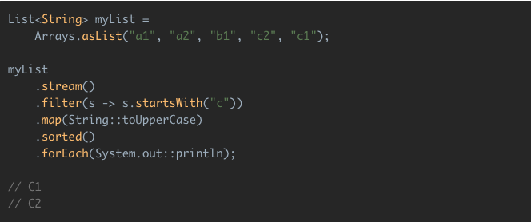

Repaso de conceptos teóricos¶
Stream API en Java¶
Definición de Stream procedente de prácticas anteriores¶
Un stream representa una secuencia de elementos que soportan diferentes tipos de operaciones para realizar cálculos sobre ellos.
Las posibles operaciones que se pueden realizar sobre un stream pueden ser intermediarias o terminales.
- Las operaciones intermediarias devuelven un nuevo stream, permitiendo encadenar múltiples operaciones intermediarias sin usar punto y coma.
- Por otro lado, las operaciones terminales son nulas o devuelven un resultado de un tipo diferente, por ejemplo un tipo numérico.

por Benjamin, Java 8 Stream Tutorial
En el ejemplo anterior, las operaciones filter, map y sorted son operaciones intermediarias, mientras que la operación forEach es una operación terminal.
Más información: https://www.oracle.com/technetwork/es/articles/java/procesamiento-streams-java-se-8-2763402-esa.html
Por otro lado, se puede observar que la mayoría de las operaciones que se aplican sobre streams aceptan algún tipo de parámetro en forma de expresión lambda, que es una interfaz funcional que especifica el comportamiento exacto de la operación. Estas operaciones no pueden modificar el contenido del stream original.
En el ejemplo anterior, se puede observar que ninguna de las operaciones modifica la variable myList añadiendo o eliminando elementos, sino que sólo se realiza el filtrado de los elementos que no empiezan por "c", se transforman a mayúsculas, se ordenan en orden alfabético y se imprimen por pantalla.
Más información: https://www.oracle.com/technetwork/es/articles/java/expresiones-lambda-api-stream-java-2737544-esa.html
Finalmente, se incluye otro ejemplo del uso del Stream API en Java:
ArrayList<Integer> mayores = (ArrayList<Integer>) Arrays
.asList(1, 2, 3, 4, 5, 6, 7, 8, 9, 10)
.stream()
.filter(x -> x > 5)
.collect(
Collectors.toCollection(() -> new ArrayList<Integer>())
);
mayores.forEach(e -> System.out.println(e));
En el ejemplo anterior se realiza el filtrado de los números que sean mayores que 5 y, posteriormente, se imprimen por pantalla los elementos de la lista. Por lo tanto, la salida del programa por consola en este caso sería:
6
7
8
9
10
Definición de operaciones disponibles en la API¶
A continuación, se describen las operaciones disponibles en el Stream API haciendo la comparativa con las consultas realizadas en SQL:
Consultas simples¶
En este caso se desea listar el nombre de todos los productos disponibles en la base de datos.
Si se considera la siguiente consulta SQL:
select name from products;
El equivalente con Stream API sería:
List<Products> products;
...
Stream<String> streams = products.stream().map(Product::getName);
- Con el método
stream()se obtiene la secuencia de elementos de tipoProduct. Sería equivalente alfromde SQL. - Con el método
mapse recupera únicamente el atributoname. Sería equivalente alselectde SQL.
Consultas con filtrado¶
En este caso se desea listar los nombres de los productos cuya existencia en el almacen sea menor a 10 unidades.
Si se considera la siguiente consulta SQL:
select name from products where units_in_stock < 10;
El equivalente con Stream API sería:
Stream<String> streams = products.stream().filter(p -> p.getUnitsInStock() < 10).map(Product::getName);
streams.forEach(product -> System.out.println(product));
- Con el método
stream()se obtiene la secuencia de elementos de tipoProduct. Sería equivalente alfromde SQL. - Con el método
filterse recuperan únicamente los productos que cumplan la condición que se le pasa como parámetro. En este caso, los que su número de unidades sea mayor a 10. Sería equivalente alwherede SQL. - Con el método
mapse recupera únicamente el atributoname. Sería equivalente alselectde SQL.
Consultas con ordenación¶
En este caso se desea listar los nombres de los productos cuya existencia en el almacén sea menor a 10 unidades pero en orden ascendente, es decir, de menor existencia a mayor existencia.
Si se considera la siguiente consulta SQL:
select name from products where units_in_stock < 10
order by units_in_stock asc;
El equivalente con Stream API sería:
Stream<String> streams = products.stream()
.filter(p -> p.getUnitsInStock() < 10)
.sorted(Comparator.comparingDouble(Product::getUnitsInStock))
.map(Product::getName);
- Con el método
stream()se obtiene la secuencia de elementos de tipoProduct. Sería equivalente alfromde SQL. - Con el método
filterse recuperan únicamente los productos que cumplan la condición que se le pasa como parámetro. En este caso, los que su número de unidades sea mayor a 10. Sería equivalente alwherede SQL. - Con el método
sortedse recuperan los productos utilizando el método de ordenación que recibe como parámetro. En este caso, los recupera en orden ascendente comparando su número de unidades. Sería equivalente alorder byde SQL. - Con el método
mapse recupera únicamente el atributoname. Sería equivalente alselectde SQL.
Consultas con agrupación¶
En este caso se desea listar el número de productos agrupados por proveedor.
Si se considera la siguiente consulta SQL:
select count(1), supplierID from products
group by supplierID
El equivalente con Stream API sería:
Map<Integer, Long> collect = products.stream()
.collect(
Collectors.groupingBy(
Product::getSupplier,
Collectors.counting()
)
);
collect.forEach((s, c) -> System.out.printf("proveedor: %s: productos: %s \n", s,c));
- Con el método
stream()se obtiene la secuencia de elementos de tipoProduct. Sería equivalente alfromde SQL. - Con el método
collectse realiza el agrupamiento a través de los criterios recibidos como parámetros. En este caso, los productos se agrupan por proveedor y se cuentan. Sería el equivalent agroup byen SQL.
Consultas con sumatorios¶
En este caso se desea obtener la suma del precio unitario de todos los productos agrupados por el número existente en el almacen.
Si se considera la siguiente consulta SQL:
select unitsInStock, sum(unitPrice) from products
group by unitsInStock;
El equivalente con Stream API sería:
Map<Integer, Double> collect = products.stream()
.collect(
Collectors.groupingBy(
Product::getUnitsInStock,
Collectors.summingDouble(
Product::getUnitPrice
)
)
);
collect.forEach((stock, suma) -> System.out.printf("en stock: %s: suma: %s \n", stock,suma));
- Con el método
stream()se obtiene la secuencia de elementos de tipoProduct. Sería equivalente alfromde SQL. - Con el método
collectse realiza el agrupamiento a través de los criterios recibidos como parámetros. En este caso, los productos se agrupan por número de unidades existentes en el almacen y se suman. Sería el equivalent agroup bycon el uso desumen SQL.
Consultas con filtrado sobre grupos¶
En este caso se desea obtener la suma del precio unitario de todos los productos agrupados por su número de existencias en el almacen, pero solo obtener aquellos productos cuya suma sea mayor a 100.
Si se considera la siguiente consulta SQL:
select unitsInStock, sum(unitPrice) from products
group by unitsInStock
having sum(unitPrice) > 100;
El equivalente con Stream API sería:
List<Map.Entry<Integer, Double>> entryList = products.stream()
.collect(
Collectors.groupingBy(
Product::getUnitsInStock,
Collectors.summingDouble(
Product::getUnitPrice
)
)
).entrySet()
.stream()
.filter(p -> p.getValue() > 100)
.collect(Collectors.toList());
entryList.forEach(list -> System.out.printf("en stock: %s, suma: %s\n",list.getKey(), list.getValue()));
- Con el método
stream()se obtiene la secuencia de elementos de tipoProduct. Sería equivalente alfromde SQL - Con el método
collectse realiza el agrupamiento a través de los criterios recibidos como parámetros. En este caso, los productos se agrupan por número de unidades existentes en el almacen y se suman. Sería el equivalent agroup bycon el uso desumen SQL. - Con el método
filterse recuperan únicamente los productos que cumplan la condición que se le pasa como parámetro. En este caso, los que la suma sea mayor a 100. En este caso, sería equivalente alhavingde SQL porque va detrás de una operación con criterios de agrupación.
Ejercicios propuestos¶
Ejercicio 1¶
Dados los siguientes fragmentos de código, responder a las siguientes preguntas:
Employee.java¶
public class Employee {
String name;
int age;
public Employee(String name, int age) {
this.name = name;
this.age = age;
}
public String getName() {
return name;
}
public void setName(String name) {
this.name = name;
}
public int getAge() {
return age;
}
public void setAge(int age) {
this.age = age;
}
public String toString() {
return "Name = " + name + ", Age = " + age;
}
}
EmployeeDatabase.java¶
import java.util.ArrayList;
import java.util.Arrays;
import java.util.List;
public class EmployeeDatabase {
private static List<Employee> employees = Arrays.asList(
new Employee("Employee1", 20),
new Employee("Employee2", 30),
new Employee("Employee3", 40),
new Employee("Employee4", 50));
public static Employee getEmployeeByName(String name) {
Employee result = null;
for(Employee e: employees) {
if(e.getName().equals(name)) {
result = e;
}
}
return result;
}
public static Employee getEmployeeByNameAndAge(String name, int age) {
Employee result = null;
for(Employee e: employees) {
if(e.getName().equals(name) && e.getAge() == age) {
result = e;
}
}
return result;
}
public static List<Employee> getEmployeeByAgeOver(int limitAge) {
List<Employee> result = new ArrayList<Employee>();
for(Employee e: employees) {
if(e.getAge() > limitAge) {
result.add(e);
}
}
return result;
}
public static List<Employee> getEmployeeByAgeUnder(int limitAge) {
List<Employee> result = new ArrayList<Employee>();
for(Employee e: employees) {
if(e.getAge() < limitAge) {
result.add(e);
}
}
return result;
}
}
Main.java¶
public class Main {
public static void main(String args[]) {
System.out.println("Employee = " + EmployeeDatabase.getEmployeeByName("Employee1"));
System.out.println("Employee = " + EmployeeDatabase.getEmployeeByName("EmployeeNull"));
System.out.println("Employee = " + EmployeeDatabase.getEmployeeByNameAndAge("Employee2", 30));
System.out.println("Employee = " + EmployeeDatabase.getEmployeeByNameAndAge("Employee2", 20));
System.out.println("Employees = " + EmployeeDatabase.getEmployeeByAgeOver(30));
System.out.println("Employees = " + EmployeeDatabase.getEmployeeByAgeUnder(30));
}
}
- Modifique las operaciones de la clase
EmployeeDatabaseutilizando las operaciones de la API para Stream de Java 8. -
Extienda la API de la clase
EmployeeDatabaseañadiendo las siguientes operaciones:- Obtener los empleados cuya edad este comprendida entre un rango dado en la operación como parámetros (
maxAgeyminAge). - Obtener los empleados ordenados ascendentemente por su edad.
- Obtener los empleados ordenados descendentemente por su edad.
- Obtener el número de empleados que existen en la base de datos.
- Obtener el número de empleados que existen en la base de datos y su nombre es igual a uno dado en la operación como parámetro.
- Obtener los empleados cuya edad este comprendida entre un rango dado en la operación como parámetros (
Ejercicio 2¶
Basándose en el código del ejercicio anterior, implemente una API para una tienda de videojuegos, teniendo en cuenta lo siguiente:
-
Implemente la clase
Videogamecontemplando los siguientes criterios:a) La clase contendrá los siguientes atributos:
- El título de tipo string.
- La categoría de tipo string.
- El precio de tipo double.
b) La clase contendrá las operaciones
setygetnecesarias para el acceso a los atributos anteriores. -
Implemente la clase
VideogameDatabasecontemplando los siguientes criterios:a) La clase contendrá los siguientes atributos:
- La lista de videojuegos existentes de tipo
Videogame.
b) La clase contendrá las siguientes operaciones implementadas con el Stream API de Java 8:
- Listar todos los títulos de los videojuegos.
- Listar todos los títulos de los videojuegos cuyo precio sea superior a 20€.
- Listar todos los títulos de los videojuegos cuya categoría sea terror.
- Listar todos los títulos de los videojuegos cuyo precio sea superior a 20€ ordenados ascendentemente por el precio.
- Listar todos los títulos de los videojuegos cuyo precio sea superior a 20€ ordenados descendentemente por el precio.
- Obtener el número de videojuegos agrupados por categoría.
- Obtener la suma de los precios de los videojuegos agrupados por categoría.
- Obtener la suma de los precios de los videojuegos agrupados por cateogoría, siempre que el precio obtenido de la suma sea superior a 200€.
- La lista de videojuegos existentes de tipo
-
Implemente además un programa de prueba
Mainque ilustre el uso de las operaciones anteriores.
Referencias¶
[1] Blog: Java 8 Stream Tutorial.
[2] Documentación Oficial Java: Procesamiento de datos con streams de Java SE 8.
[3] Documentación Oficial Java: Introducción Expresiones Lambda y API Stream en Java SE 8.